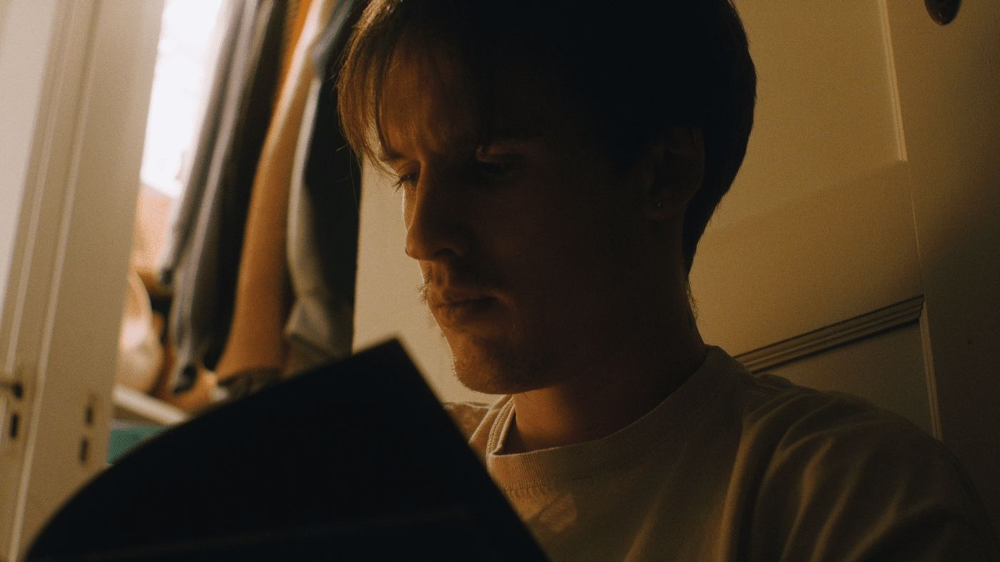
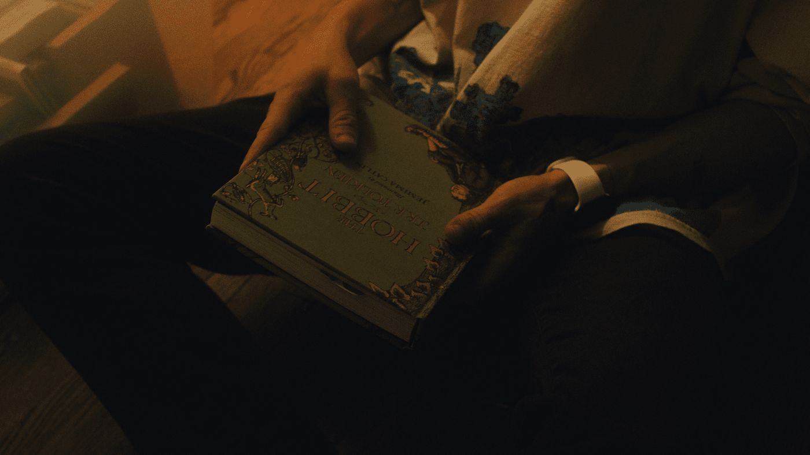
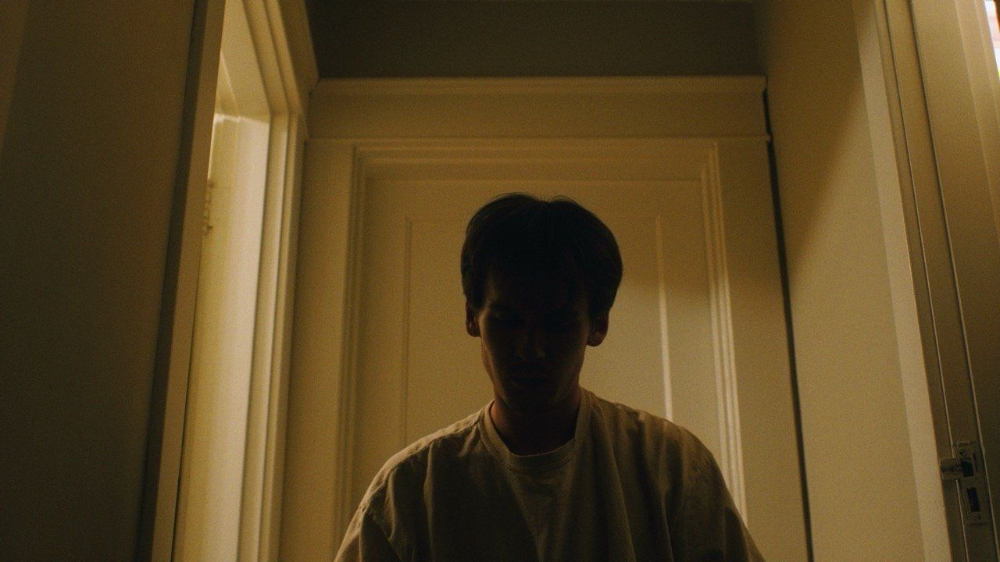
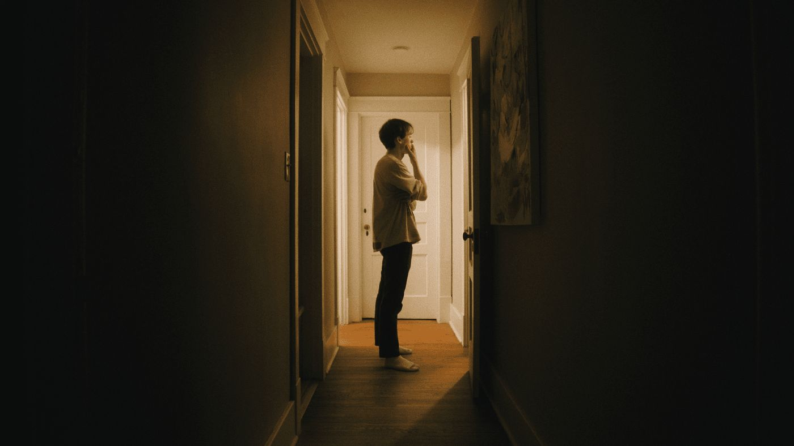
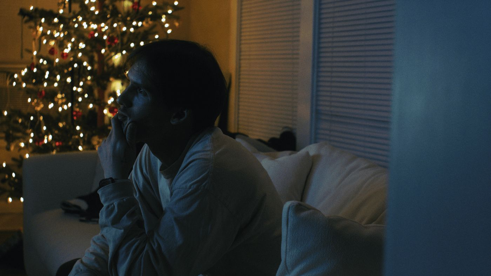
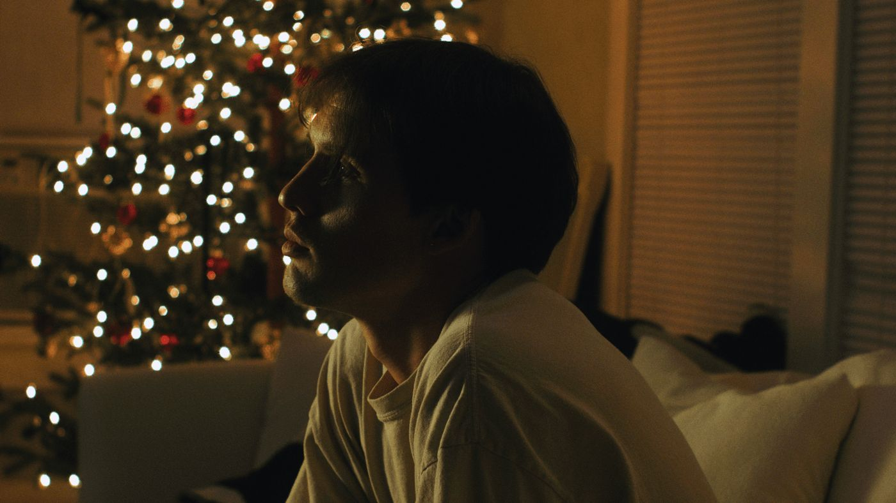

The Movie That Changed Everything
A short documentary I made in my house about why I got into filmmaking. I made it because I needed a vlog for my (at the time) daily YouTube channel, submitted it on a whim to an online film festival, and it was chosen as one of the 10 finalists shown.
- Directed by
- Ty Combs
- Cinematography
- Ty Combs
- Selection
- Dance of Cinema Film Festival, 2024





